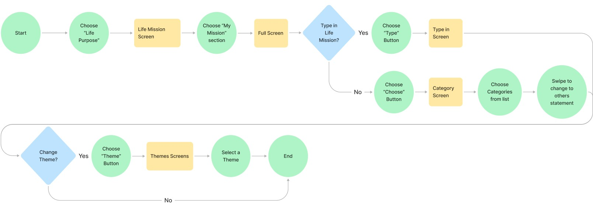
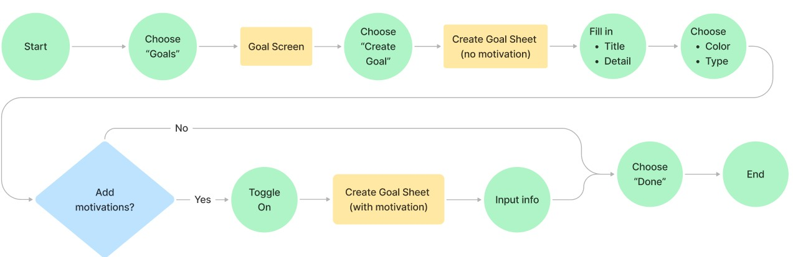
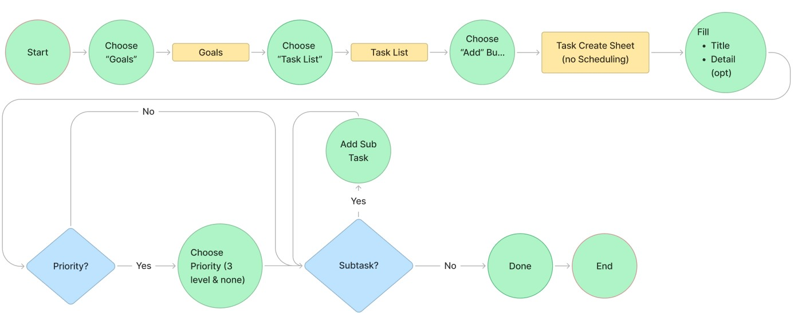
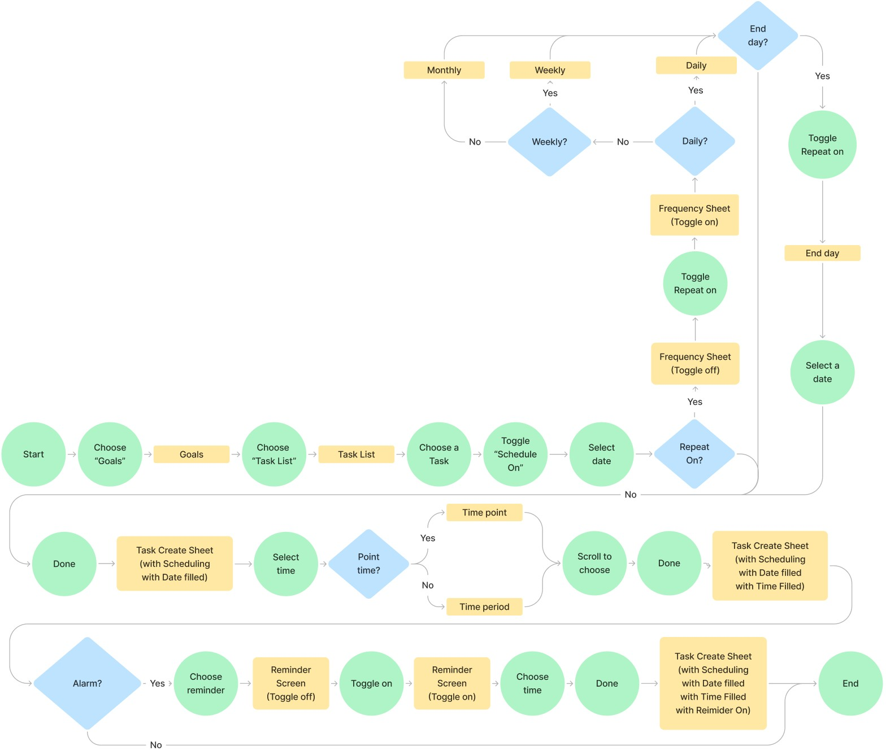
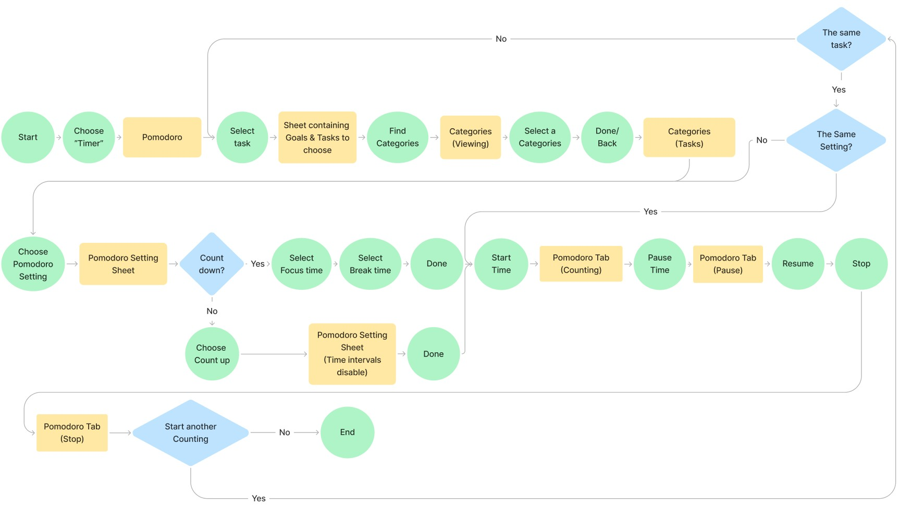
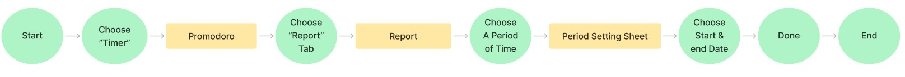

Make the goal mean something.
Connect daily effort to a life mission, something larger and more important than yourself.
Life mission
From FlowTheory to product design. A goal motivation app built around purpose, curiosity and focus.
Explore the case study


A goal motivation app, from research to interface.
I am someone with many goals and plans. However, as I progress to later stages, my energy and inspiration gradually decline.
There are tasks that I know I should do but end up procrastinating, getting involved in less important trivial things.
Five interviews and a 51-person survey explored the pain points people encounter while pursuing their goals, and the solutions that could help.
Research focus
Direction, motivation
and sustained attention.
Connect daily effort to a life mission, something larger and more important than yourself.
Life mission
Set goals with a clear direction and divide them into smaller, manageable tasks.
Goals & tasks
Give a task undivided attention with short periods of focus, followed by a break.
Pomodoro timer
People who believe that they're working toward something larger and more important than themselves are often the most hardworking, productive and engaged.
In the other hand, they may become disengaged and demotivated at work if they don't understand, or can't invest in the “bigger picture”.
So encouraging them to find purpose in their work will help to boost their motivation (Article).
Curiosity drives us to seek knowledge and explore new subjects. It initiates our journey of discovery.
However, without clear direction or organization, curiosity alone may lead to aimless exploration, individuals may feel overwhelmed by the vast amount of information available, unsure of where to start or how to progress and easily lead to frustration,
As a result, they may become demotivated and lose interest in pursuing their goal.
Refers to finding fulfillment in the activity itself, without relying on external rewards.
I came across an article emphasizing the importance of being fully present in our tasks to truly enjoy life. By giving our undivided attention to what we're doing, we can derive satisfaction from the process rather than just the outcome.
Research and feature concepts from the original Moti-Pulse case-study board.
I first identified the relevant user segment to select the right participants for conducting qualitative and quantitative research.
May encounter self-doubt, feel directionless as they transition into adulthood.
Seeking personal and professional development.
Tech-savvy, prefer digital solutions for enhancement, productivity, and well-being.
5 interviews, with recordings
Part 1: To uncover any additional pain points encountered by the interviewee when pursuing their goals & to observe several user journeys as they pursue their goals.
User 1: Learning Korean, has gathered resources, created a learning plan, set alarms but hasn't started yet - Feels the task isn't significant enough to begin.
User 2: Looking for jobs during the economic downturn of 2023, facing prolonged unemployment, and lacking family understanding - Feels discouraged.
User 3: Learning SQL, got resources and made a plan but hasn't started - Doesn't feel important enough yet.
User 4: Learning guitar, despite being busy with occasional overtime, the desire to pursue it is strong. During the research phase, getting lost in information leads to indecision.
User 5: Overfocused on immediate tasks, resulting in insufficient time for subsequent tasks or more important tasks later.
Part 2: To discover any additional solution suggested by the interviewee. Asking people if they have experience these situation and how they think what could help them overcome / tackle
Method: Form
Number of participants: 51
Part 1: To confirm if the pain points I've identified from my perspective and those of other interviewees are common among many people.
Result:
The original charts do not label individual bar counts. These descriptions follow the relative bar heights shown in the source.
Part 2: To validate if the solutions I propose and discover are widely recognized as having a positive impact on the goal pursuit process.
Result:
Divide tasks into smaller steps.
Rating 3 is highest, then 4, 2, and 1.Find motivation beyond yourself.
Rating 3 is highest, then 4, 2, and 1.Use short focus intervals and breaks.
Rating 3 is highest, then 4, 2, and 1.Prioritize tasks by importance.
Rating 4 is highest, then 3, 2, and 1.The original charts do not label individual bar counts. These descriptions follow the relative bar heights shown in the source.
The bar charts above follow the proportions in the source board. Individual response counts are not labelled in the source.
The quantitative research revealed common pain points and potential solutions. I then translated these insights into personas, allowing me to design solutions tailored to their specific needs.

“Daring to embrace change for greater growth and fulfillment.”
Huy embarks on a journey to transition into a new career path. Motivated by a desire for personal growth, he assesses his skills and researches methods to enhance them. However, he struggles with moments of demotivation.

“Success is not final, failure is not fatal: It is the courage to continue that counts”
Van Anh, a student in HCM City, dreams of winning a scholarship to help her family. Despite feeling stressed and having lots to study, she stays focused and seeks help to stay motivated. Her hard work will pay off if she earns the scholarship.
The personas helped shape solutions and features for key user needs. Next, I explored the functions & information required to implement the features.

Goals have a title, color, type, optional details, and progress. Tasks have a title, details, priority and subtasks, with filters and completion states. Pomodoro supports start, resume and stop, count up or down, and configurable focus and break lengths.
Life mission guidance includes examples, resources and criteria: long-term, focused outside yourself, does no harm to others, encompasses all domains of your life, motivates and inspires you. Scheduling includes a start date and time, duration, daily/weekly/monthly repeats and an end date. The dashboard shows a calendar and tasks. Time tracking shows time per task and overall; reminders can be on time or custom.
Organize & Prioritize features within the app structure, ensuring users can access and utilize the functions that support their goals.
Once the app structure was defined, I developed task flows to understand how users could efficiently navigate between screens to complete their tasks.






Having identified the required screens through the task flows, I sketched each screen to define the information needed and organize its hierarchy.


Four high-fidelity screens bring the research into the app: a daily dashboard, life mission, goals and tasks, and a Pomodoro timer.

Life mission, goals and tasks, and the Pomodoro timer bring the research into one mobile experience.
Write a life mission into one sentence. Keep it in view as a reminder of what your goals are for.
Set a goal, divide it into smaller tasks, and choose priorities. Make the next action clear enough to begin.
Focus intensely for a short period, then take a short break. The Pomodoro timer gives each task its own time.
Life missionGoals and tasksPomodoro timerCreate a life mission and explore guidance for finding purpose.

Create a goal, choose its type and connect it with motivation.

Break a goal into smaller tasks.

Schedule tasks and choose when to work on them.

Set aside a short period of focused attention.

Review time spent on goals and tasks.